A disconnected network: NMA, ML-NMR, and cML-NMR compared
Source:vignettes/cpaic-disconnected-myeloma.Rmd
cpaic-disconnected-myeloma.RmdThis vignette walks through the situation cpaic exists for: a treatment network that is disconnected and whose trials enrolled different populations. We compare what a standard network meta-analysis can do, what a standard multilevel network meta-regression (ML-NMR) can do, and what the component-additive version (cML-NMR) adds.
The data here are entirely simulated. The clinical setting (maintenance therapy in newly diagnosed multiple myeloma) is used only for its vocabulary, because maintenance regimens are genuinely multi-component. No data, effect estimate, or result is taken from any publication. We set the true parameter values ourselves below, which is what lets us check whether each method recovers them.
The setting
Maintenance regimens combine components. Write Obs for
observation (the inactive comparator) and use four active components:
R (lenalidomide), V (bortezomib),
D (daratumumab), and I (ixazomib).
The trials split into two groups that share no treatment:
-
Sub-network 1, older trials against observation:
ObsvsR,ObsvsV. -
Sub-network 2, newer trials on a lenalidomide
backbone:
R+VvsR+D,R+VvsR+I.
No trial links the two. A decision maker nevertheless has to ask:
how does R+D compare with R?
That contrast crosses the gap.
The two groups also enrolled different patients. We use
high-risk cytogenetics (hr), a binary
variable: the newer trials enrolled a higher-risk population (45% versus
15%). A binary effect modifier is used deliberately, because integrating
a binary covariate as though it were normal would place integration
points outside {0, 1}, that is, integrate the model over
patients who cannot exist. cpaic gives a 0/1 covariate a Bernoulli
margin automatically.
treatments <- c("Obs", "R", "V", "R+V", "R+D", "R+I")
Cmat <- build_C_matrix(treatments, inactive = "Obs")
# TRUTH (log-odds ratio of response), which we will try to recover.
beta_true <- c(D = 0.30, I = 0.35, R = 0.45, V = 0.55) # main effects
# Bortezomib does WORSE in high-risk patients; daratumumab does BETTER.
gamma_true <- c(D = 0.60, I = 0.10, R = 0.05, V = -0.50) # x effect modifier
Cmat
#> D I R V
#> Obs 0 0 0 0
#> R 0 0 1 0
#> V 0 0 0 1
#> R+V 0 0 1 1
#> R+D 1 0 1 0
#> R+I 0 1 1 0The estimand is population-specific,
theta_t(x) = C_t' (beta + Gamma x), where x is
the proportion of high-risk patients in the target
population. Note already that V and D must
cross: theta_V(x) = 0.55 - 0.50x while
theta_D(x) = 0.30 + 0.60x, so they are equal at
x = 0.227 and swap order either side of it.
gen_arm <- function(study, trt, n, mu0, p_hr) {
hr <- rbinom(n, 1, p_hr)
tc <- Cmat[trt, ]
eta <- mu0 + 0.25 * hr + sum(tc * beta_true) + sum(tc * gamma_true) * hr
data.frame(.study = study, .trt = trt,
.y = rbinom(n, 1, plogis(eta)), hr = hr)
}
agg <- function(d) data.frame(.study = d$.study[1], .trt = d$.trt[1],
r = sum(d$.y), n = nrow(d), hr_mean = mean(d$hr))
# We hold IPD for two of our own trials, one in each sub-network. The other two
# trials are published aggregate data. The IPD trials are large, and enrolled a
# reasonable mix of risk groups, because a component by effect-modifier
# interaction is estimated from the covariate variation WITHIN a trial: a trial
# with only 15% high-risk patients carries little information about how the
# effect differs by risk, however many patients it has in total.
ipd <- rbind(gen_arm("OLD-2", "Obs", 1200, -0.2, 0.30), # IPD, sub-network 1
gen_arm("OLD-2", "V", 1200, -0.2, 0.30),
gen_arm("NEW-1", "R+V", 1200, 0.1, 0.50), # IPD, sub-network 2
gen_arm("NEW-1", "R+D", 1200, 0.1, 0.50))
agd <- rbind(agg(gen_arm("OLD-1", "Obs", 350, -0.3, 0.15)),
agg(gen_arm("OLD-1", "R", 350, -0.3, 0.15)),
agg(gen_arm("NEW-2", "R+V", 400, 0.0, 0.45)),
agg(gen_arm("NEW-2", "R+I", 400, 0.0, 0.45)))
agd
#> .study .trt r n hr_mean
#> 1 OLD-1 Obs 140 350 0.1228571
#> 2 OLD-1 R 183 350 0.1571429
#> 3 NEW-2 R+V 277 400 0.4175000
#> 4 NEW-2 R+I 307 400 0.43750001. Standard NMA cannot answer the question
edges <- data.frame(treat1 = c("R", "V", "R+D", "R+I"),
treat2 = c("Obs", "Obs", "R+V", "R+V"))
g <- igraph::graph_from_data_frame(edges, directed = FALSE)
igraph::components(g)$no # number of connected components
#> [1] 2Two components, so there is no path from R+D to
R. A standard NMA cannot estimate the contrast at all. It
is not that the estimate is imprecise; it does not exist.
The same network, read as components
A standard NMA sees nodes and edges, and nothing else. cpaic reads the treatment labels as components, and so sees what the treatment graph cannot: the two sub-networks are disjoint as sets of treatments but overlapping as sets of components. Build the network object from the contrast-level data, one unadjusted log-odds ratio per trial, together with the individual patient data.
arms <- rbind(
do.call(rbind,
lapply(split(ipd, list(ipd$.study, ipd$.trt), drop = TRUE), agg)),
agd)
# The unadjusted within-trial contrast, for each of the four trials.
unadjusted <- function(study, t1, t2) {
a <- arms[arms$.study == study & arms$.trt == t1, ]
b <- arms[arms$.study == study & arms$.trt == t2, ]
data.frame(studlab = study, treat1 = t1, treat2 = t2,
TE = log(a$r * (b$n - b$r) / ((a$n - a$r) * b$r)),
seTE = sqrt(1 / a$r + 1 / (a$n - a$r) + 1 / b$r + 1 / (b$n - b$r)))
}
contrasts <- rbind(unadjusted("OLD-1", "R", "Obs"),
unadjusted("OLD-2", "V", "Obs"),
unadjusted("NEW-1", "R+D", "R+V"),
unadjusted("NEW-2", "R+I", "R+V"))
contrasts
#> studlab treat1 treat2 TE seTE
#> 1 OLD-1 R Obs 0.4969574 0.15283084
#> 2 OLD-2 V Obs 0.4673908 0.08238449
#> 3 NEW-1 R+D R+V 0.2757059 0.09456794
#> 4 NEW-2 R+I R+V 0.3824151 0.16046871
net <- cpaic_network(contrasts, ipd = ipd, sm = "OR", family = "binomial",
ipd_covariates = "hr", inactive = "Obs")
cpaic_connectivity(net)
#> cpaic connectivity
#> Connected network: FALSE
#> Sub-networks: 2
#> [1] 3 treatments
#> [2] 3 treatments
#> Bridging components: R, V
#> Component design: rank(X) = 4 / 4 components -> all component effects identified
#> Estimable effects: 5 / 5 vs ObsTwo sub-networks, which the treatment graph had already established.
The new information is in the last two lines: the component design
matrix X = B C has full column rank, so all four component
effects are identified, and every relative effect versus
Obs is estimable. The gap is closable, and
cpaic_connectivity() names the components that close
it.
plot(net)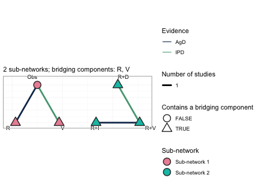
This is the central figure of the vignette. Each sub-network is laid
out on its own circle and the circles are placed side by side, so the
disconnection is shown rather than asserted: no edge runs between the
two groups. Node fill gives the sub-network. Edges are colored by the
evidence behind them, so the two trials for which we hold individual
patient data (OLD-2, the Obs versus
V edge on the left, and NEW-1, the
R+V versus R+D edge on the right) are
distinguished from the two published aggregate trials. The triangular
nodes are the treatments that contain a bridging component,
which here is every treatment except Obs, and the subtitle
names the bridging components themselves: R and
V. Those two components are what the sub-networks hold in
common. R is given alone in the old trials and sits inside
every regimen of the new ones; V is given alone in the old
trials and sits inside R+V in the new ones. An additive
model assigns each component a single parameter, shared across the gap,
and that shared parameter is the entire mechanism by which the network
is reconnected.
plot(net, weight_edges = FALSE)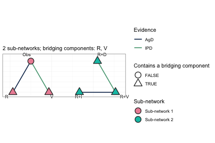
Every comparison in this network is informed by exactly one trial, so
scaling edge width by the number of studies conveys nothing here;
weight_edges = FALSE removes that legend and leaves a
cleaner reading of the same network. On a network with several trials
per comparison the default is the more informative of the two.
2. cNMA reconnects the network, but leaves the populations unadjusted
An additive component NMA (Rücker et al. 2020,
2021) estimates the four component effects from the four observed
contrasts and reconstructs any treatment effect as
theta_t = C_t' beta. Because the component parameters are
shared between the sub-networks, the reconstruction reaches across the
gap. This is the connection layer of cpaic, and on aggregate data alone
it is already enough to produce a cross-gap number.
br <- cnma_bridge(net)
br
#> cpaic component-NMA bridge (random effects, sm = OR)
#> Additive-model fit (Cochran Q): Q = 0, df = 0, p = NA
#>
#> Component effects (OR scale, link/log):
#> component estimate se lower upper pval
#> D 0.743 0.125 0.497 0.989 3.125963e-09
#> I 0.850 0.180 0.496 1.203 2.463056e-06
#> R 0.497 0.153 0.197 0.797 1.147239e-03
#> V 0.467 0.082 0.306 0.629 1.400840e-08Note the Cochran Q line: four contrasts and four components leave zero degrees of freedom, so the additive model is saturated and its fit cannot be tested at all here. Additivity is assumed, not checked. This is not an artifact of the simulation; it is the generic situation when a network is only just rich enough in components to be bridged.
forest(br)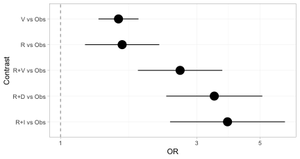
Every treatment now has an estimate versus Obs,
including the three regimens in the sub-network that contains no
Obs arm. The disconnection has been repaired.
forest(br, what = "component")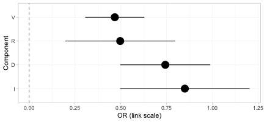
The component forest shows the incremental effect of adding each component to a regimen, on the log-odds-ratio scale. These four numbers are what carry the evidence across the gap; every treatment effect above is a sum of them.
knitr::kable(league_table(br),
caption = "Aggregate cNMA league table (odds ratios, row versus column). Every cell is filled: the component bridge reconnects the network completely.")| Obs | R | R+D | R+I | R+V | V | |
|---|---|---|---|---|---|---|
| Obs | Obs | 0.61 (0.45, 0.82) | 0.29 (0.20, 0.43) | 0.26 (0.16, 0.41) | 0.38 (0.27, 0.54) | 0.63 (0.53, 0.74) |
| R | 1.64 (1.22, 2.22) | R | 0.48 (0.37, 0.61) | 0.43 (0.30, 0.61) | 0.63 (0.53, 0.74) | 1.03 (0.73, 1.45) |
| R+D | 3.46 (2.35, 5.09) | 2.10 (1.64, 2.69) | R+D | 0.90 (0.62, 1.29) | 1.32 (1.09, 1.59) | 2.17 (1.52, 3.08) |
| R+I | 3.84 (2.42, 6.11) | 2.34 (1.64, 3.33) | 1.11 (0.77, 1.60) | R+I | 1.47 (1.07, 2.01) | 2.41 (1.56, 3.72) |
| R+V | 2.62 (1.87, 3.69) | 1.60 (1.36, 1.88) | 0.76 (0.63, 0.91) | 0.68 (0.50, 0.93) | R+V | 1.64 (1.22, 2.22) |
| V | 1.60 (1.36, 1.88) | 0.97 (0.69, 1.36) | 0.46 (0.32, 0.66) | 0.42 (0.27, 0.64) | 0.61 (0.45, 0.82) | V |
The league table is complete. Not one cell is empty, even though only four of the fifteen pairwise comparisons among these six treatments were ever made in a trial. That is the achievement of the connection layer, and it is also the trap: nothing in this table records which population it refers to.
plot_edge_influence(br, treatment = "R+D", comparator = "R")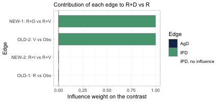
This is the figure that decides whether population adjustment is
possible at all. It decomposes the cross-gap estimate of
R+D versus R into the weight each observed
edge carries in it. Exactly two edges carry the contrast,
OLD-2 (V versus Obs) and
NEW-1 (R+D versus R+V), each with
weight one; the other two edges have weight zero and contribute nothing.
Those two load-bearing edges are precisely the two trials for which we
hold individual patient data, one on each side of the gap. The cross-gap
contrast is therefore adjustable: the edges that carry it are the edges
we can reweight or model. Had the individual patient data instead sat on
OLD-1 and NEW-2, the two edges with zero
weight, no amount of population adjustment could have moved this
contrast, however healthy the effective sample size looked.
plot_edge_influence() is the diagnostic that detects that,
and no conventional one does.
3. ML-NMR adjusts the population, but does not bridge the gap
ML-NMR (Phillippo et al. 2020) is the right tool for the population problem: it fits the individual-level model to the IPD and integrates it over each aggregate study’s covariate distribution, so effect-modifier imbalance is handled correctly rather than through study-mean meta-regression.
But ML-NMR treats each regimen as an indivisible node.
R+D and R share no node and no trial connects
them, so nothing links the two sub-networks. A Bayesian fit will still
return a posterior for the contrast, and it will look perfectly healthy;
but it is the prior speaking, not the data. This is
precisely the trap Wigle et al. (2026)
warn about.
4. cML-NMR: bridge with components, adjust by integration
The regimens are not really indivisible. R+D and
R share the component R, and
R+V shares R and V with the old
trials. The additive component model turns shared components into shared
parameters, which reconnects the network by construction, while
the ML-NMR integration handles the population imbalance.
First: what is actually estimable?
Reconnecting a network does not guarantee that the effect you want is identified. Population adjustment is strictly harder than reconnection, because the component by effect-modifier interactions have to be identified too. Always check.
fit <- cmlnmr(ipd, agd,
effect_modifiers = "hr", # binary -> Bernoulli margin, automatic
inactive = "Obs", family = "binomial",
chains = 4, iter_warmup = 700, iter_sampling = 700, seed = 1)
estimable_effects_at(fit, newdata = data.frame(hr = 0.30))
#> Estimability of the population-adjusted relative effects
#> Target population: hr = 0.3
#> treatment comparator estimable identified_by basis
#> R Obs FALSE none not identified
#> R+D Obs FALSE none not identified
#> R+I Obs FALSE none not identified
#> R+V Obs FALSE none not identified
#> V Obs TRUE IPD exact
#>
#> Rows marked "not identified" carry no first-order information; a number
#> reported for them would be the prior. relative_effects() returns NA there.Read the identified_by column. An effect identified only
from aggregate data is identified by a between-study gradient
across study means, which is ecological inference; an effect identified
from IPD is identified by within-study covariate variation.
They are not equal currency, and cpaic keeps them apart.
plot_estimability() evaluates the same check over a grid
of target populations and tiles the answer. We ask it against
R, the comparator the decision maker actually wants.
plot_estimability(fit, em = "hr", values = seq(0, 1, by = 0.2),
reference = "R")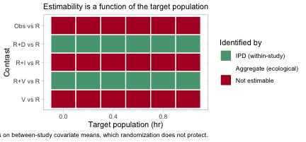
Compare this with the league table of Section 2, in which every
single cell was filled. The aggregate cNMA reconnected the network
completely; the population-adjusted model does not, and the map says
which contrasts survive. Population adjustment is strictly harder than
reconnection: reconnection needs only the component main
effects beta, whereas a population-adjusted contrast also
needs the component by effect-modifier interactions Gamma
along the direction of the target. A contrast can therefore be perfectly
estimable in an aggregate-data cNMA and still not be estimable as a
population-adjusted effect, which is exactly what has happened to three
of the five rows here. In this particular network the estimable set
happens to be the same in every target population, so the rows are
constant across the grid; that is not guaranteed, and the point of the
figure is that it must be checked rather than assumed.
The reason is visible in the posteriors themselves.
plot_prior_posterior(fit, prior = "gamma")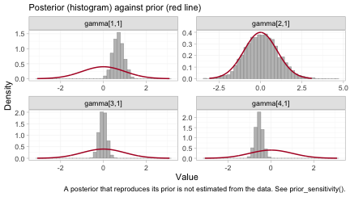
Each panel overlays the posterior of one component by effect-modifier
interaction (histogram) on its prior (red line). The components are
indexed alphabetically, so gamma[1,1] through
gamma[4,1] are D, I,
R and V.
The interactions of D and of V are each
carried by one of the two individual-patient-data trials, and their
posteriors are far tighter than their priors: those two have been
estimated. The interaction of I is its prior redrawn,
because no trial informs it with within-study covariate variation; the
data have said nothing about it at all.
R is the instructive case, and it is why this figure
must not be read on its own. Its posterior is somewhat narrower than its
prior, yet R is not identified. An aggregate arm
constrains a combination of a main effect and its interaction without
pinning either one, which narrows the marginal posterior while leaving
the individual parameter free. Narrowness is not identification. A
Bayesian model returns a posterior for all four regardless, and all four
look like perfectly respectable distributions; what may legitimately be
reported is settled by the algebraic check in
estimable_effects_at(), not by the eye.
The cross-gap comparison, in a named target population
Ask for the cross-gap contrast directly, against
R as the reference. This matters: R+D versus
Obs and R versus Obs are each NOT
identified at a general target, because R is seen only in
an aggregate contrast and is therefore pinned down only at that study’s
covariate mean. Their difference, R+D versus
R, is the component D, and it IS identified.
cpaic returns NA for the two that are not identified and a
number for the one that is, which is exactly the behavior you want.
relative_effects(fit, reference = "R", newdata = data.frame(hr = 0.15))
#> Relative effects (OR, back-transformed)
#> Target population: hr = 0.15
#> treatment comparator estimate se lower upper pr_gt0
#> Obs R NA NA NA NA NA
#> R+D R 1.557 0.135 1.186 2.001 1
#> R+I R NA NA NA NA NA
#> R+V R 1.741 0.084 1.474 2.047 1
#> V R NA NA NA NA NA
#> NA = not uniquely estimable from this component design (see estimable_effects()).
relative_effects(fit, reference = "R", newdata = data.frame(hr = 0.60))
#> Relative effects (OR, back-transformed)
#> Target population: hr = 0.6
#> treatment comparator estimate se lower upper pr_gt0
#> Obs R NA NA NA NA NA
#> R+D R 2.134 0.141 1.617 2.798 1.000
#> R+I R NA NA NA NA NA
#> R+V R 1.356 0.097 1.112 1.648 0.999
#> V R NA NA NA NA NA
#> NA = not uniquely estimable from this component design (see estimable_effects()).The same two tables as forest plots, one target population each.
forest(fit, reference = "R", newdata = data.frame(hr = 0.15))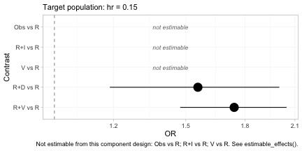
forest(fit, reference = "R", newdata = data.frame(hr = 0.60))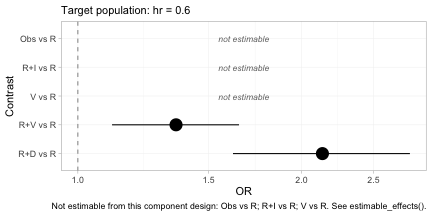
The subtitle of each panel records the target population, because
without it the estimates are meaningless. Two features deserve
attention. First, the contrasts that are not identified are drawn as
labeled empty rows rather than dropped: forest() will not
present a plot that looks complete when it is not, and the caption
repeats which rows are missing and why. Second, R+D versus
R moves between the two panels while R+V
versus R moves the other way, which is the crossing of
daratumumab and bortezomib that we built into the data generating
mechanism.
theta <- function(trt, x) sum(Cmat[trt, ] * (beta_true + gamma_true * x))
for (x in c(0.15, 0.60)) {
cat(sprintf("hr = %.2f: true log-OR(R+D vs R) = %+.3f\n",
x, theta("R+D", x) - theta("R", x)))
}
#> hr = 0.15: true log-OR(R+D vs R) = +0.390
#> hr = 0.60: true log-OR(R+D vs R) = +0.660The contrast that no trial measured, across a gap no comparator spans, is recovered; and it is recovered differently in the two target populations, because daratumumab is more effective in high-risk patients. A single population-free number would be wrong for at least one of them.
knitr::kable(league_table(fit, newdata = data.frame(hr = 0.60)),
caption = "cML-NMR league table (odds ratios, row versus column) in a target population with 60% high-risk patients. Empty cells are not estimable as population-adjusted effects.")| Obs | R | R+D | R+I | R+V | V | |
|---|---|---|---|---|---|---|
| Obs | Obs | 0.74 (0.61, 0.90) | ||||
| R | R | 0.48 (0.36, 0.62) | 0.74 (0.61, 0.90) | |||
| R+D | 2.13 (1.62, 2.80) | R+D | 1.57 (1.29, 1.91) | |||
| R+I | R+I | |||||
| R+V | 1.36 (1.11, 1.65) | 0.64 (0.52, 0.78) | R+V | |||
| V | 1.36 (1.11, 1.65) | V |
Set this against the aggregate cNMA league table of Section 2. That one was complete; this one is mostly empty, and the difference between them is the whole lesson of the vignette. The unadjusted bridge gives a number for every cell and attaches it to no population at all. The adjusted model gives a number only where the data can support one in the population you asked about, and it declines the rest.
The cells it does fill are V against Obs,
inside the old sub-network, and the three comparisons among
R, R+V and R+D, which include the
cross-gap contrast that prompted the analysis. The pattern of refusals
is not arbitrary. Any comparison that changes the ixazomib content is
refused, because no trial anywhere in the network provides within-study
covariate variation on I; and any comparison that changes
the lenalidomide content is refused for the same reason applied to
R. What survives is precisely the set of contrasts in which
the components with unidentified interactions cancel.
5. The hierarchy is population-specific
If component effects depend on the population, so do component rankings. The question is not “which component is best?” but “which component is best in this population?” (Wigle et al. 2026).
cpaic_ranks(fit, newdata = data.frame(hr = 0.05), what = "component")
#> Warning: Dropped from the hierarchy as not estimable in this target population: I, R.
#> Ranking them would rank the prior. See estimable_effects_at().
#> Population-adjusted component hierarchy
#> Target population: hr = 0.05
#> element estimate p_best median_rank mean_rank sucra
#> V 0.607 0.979 1 1.021 0.979
#> D 0.364 0.021 2 1.979 0.021
#> Not estimable in this population, so not ranked: I, R
#> Ranking metrics depend on the set ranked; report them with the effects, not instead.
cpaic_ranks(fit, newdata = data.frame(hr = 0.80), what = "component")
#> Warning: Dropped from the hierarchy as not estimable in this target population: I, R.
#> Ranking them would rank the prior. See estimable_effects_at().
#> Population-adjusted component hierarchy
#> Target population: hr = 0.8
#> element estimate p_best median_rank mean_rank sucra
#> D 0.888 1 1 1 1
#> V 0.188 0 2 2 0
#> Not estimable in this population, so not ranked: I, R
#> Ranking metrics depend on the set ranked; report them with the effects, not instead.Two things happen here, and both are the point.
First, R and I are
dropped. Neither is identified at a general target population:
R appears only in an aggregate contrast, and I
only in an aggregate contrast against R+V, so each is
pinned down only at its own study’s covariate mean. Ranking them would
rank the prior. This is Step 3 of the Wigle et al. workflow, now with an
estimable set that itself depends on the target.
Second, among the components that are identified,
the order reverses: V wins in a low-risk
population and D wins in a high-risk one.
plot(suppressWarnings(
cpaic_ranks(fit, newdata = data.frame(hr = 0.05), what = "component")))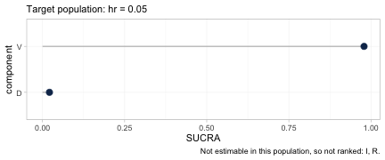
plot(suppressWarnings(
cpaic_ranks(fit, newdata = data.frame(hr = 0.80), what = "component")))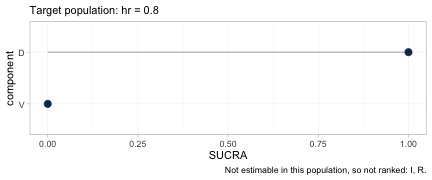
The two hierarchies, plotted. Each carries its target population in
the subtitle and the components it refused to rank in the caption, so
neither can be quoted without them. Between the first panel and the
second the SUCRA values of D and V exchange
places completely.
The full rank distribution behind those metrics is available through
rank_probs(). Asking for it at the level of
treatments, which is the default, produces a refusal.
tryCatch(
rank_probs(fit, newdata = data.frame(hr = 0.30)),
error = function(e) cat("rank_probs() refused:\n ", conditionMessage(e), "\n"))
#> Warning: Dropped from the hierarchy as not estimable in this target population: R, R+D,
#> R+I, R+V. Ranking them would rank the prior. See estimable_effects_at().
#> rank_probs() refused:
#> Fewer than two elements are estimable in this target population, so no hierarchy can be formed. See estimable_effects_at().The refusal is the correct answer, and it is deliberate. Of the five
treatments to be ranked against Obs, only V is
estimable in a general target population, and a hierarchy of one element
is not a hierarchy. The alternative, which most software would take, is
to rank all five from posteriors that are for the most part the prior
redrawn, and to return a confident-looking ordering built on nothing.
This is Step 3 of the Wigle et al. (2026)
workflow enforced in code rather than left to the analyst’s discipline.
Ask instead for the hierarchy the network can support, which is the one
over components.
plot(suppressWarnings(
rank_probs(fit, newdata = data.frame(hr = 0.80), what = "component")))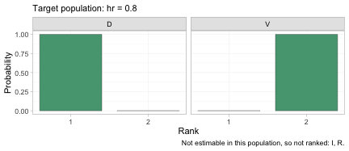
The rankogram gives the posterior probability that each component occupies each rank, among the components that are estimable in this target population. In a population with 80% high-risk patients the posterior is close to certain that daratumumab is the better of the two, which is the same conclusion as the SUCRA plot above but with the uncertainty made explicit.
plot_rank_curve(fit, em = "hr", values = seq(0, 1, by = 0.1),
what = "component") +
ggplot2::geom_vline(xintercept = 0.227, linetype = "dashed") +
ggplot2::labs(
title = "A component hierarchy is a function of the target population",
x = "Proportion of high-risk patients in the target population")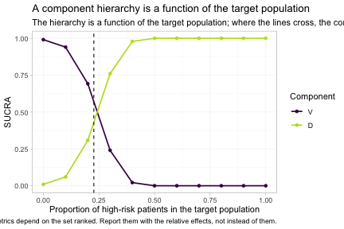
plot_rank_curve() traces the whole family of hierarchies
at once, rather than one hierarchy at a time. The dashed line marks the
true crossover at hr = 0.227, which we derived from the
parameter values we set at the top of the vignette, and the estimated
curves cross close to it. To the left of that line bortezomib leads; to
the right daratumumab does. A single component ranking, quoted without a
population, is not a well-posed answer to any question; it is an answer
to the question of what happens at one unstated point on this axis.
Model checking
None of the above means anything if the posterior was not explored. Two standard checks, and one that matters more than usual here.
plot(fit, type = "trace")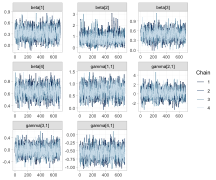
Trace plots of the component effects beta and the
component by effect-modifier interactions gamma. The four
chains should be indistinguishable and stationary. Note that the chains
for the unidentified interactions mix perfectly well; good mixing is
evidence about the sampler, not about identification, and it is
precisely why the identification analysis of Section 4 cannot be
skipped.
plot(fit, type = "rhat")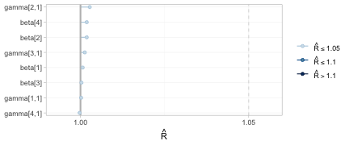
All potential scale reduction factors sit at the left of the scale, so the chains have converged.
plot_prior_posterior(fit)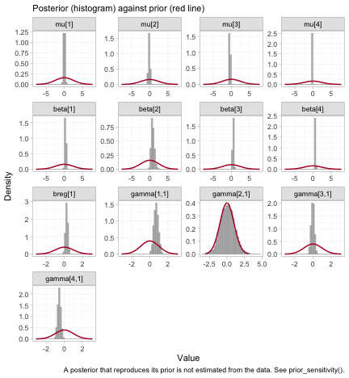
The full prior-against-posterior panel: study intercepts
mu, component effects beta, the prognostic
regression coefficient breg, and the interactions
gamma. Read it as a map of what the data actually informed.
The parameters whose posteriors have collapsed relative to their priors
are the ones the network identifies; the two gamma panels
that still reproduce their prior are the reason R and
I are dropped from every hierarchy above.
What to take away
| Method | Adjusts the population | Bridges the disconnection | Cross-gap effect |
|---|---|---|---|
| Standard NMA | no | no | not estimable |
| Aggregate cNMA | no | yes, via shared components | estimable, but population-free |
| ML-NMR | yes | no | prior-driven, not identified |
| cML-NMR | yes | yes, via shared components | estimable, and population-specific |
Three warnings, which are not optional reading.
- The bridging assumption is untestable. Reconnecting through shared components requires the component effects, and their interactions with the effect modifiers, to be the same in both sub-networks. There is by construction no cross-gap evidence with which to test that; it must be defended clinically (Veroniki et al. 2026). In this network the additive model is saturated, so not even its internal fit statistic has degrees of freedom to spend on the question.
-
Estimability is not automatic. As
RandIshow above, a contrast can be perfectly estimable as an aggregate-data component contrast and still not be estimable as a population-adjusted effect. The two league tables, one complete and one mostly empty, are the same network under the two criteria. Runestimable_effects_at()andplot_estimability(), and believe what they say. -
Where the individual patient data sit decides what can be
adjusted. The cross-gap contrast here is carried entirely by
the two IPD edges, so population adjustment can reach it. Put the same
IPD on the other two edges and the contrast becomes unadjustable,
without any conventional diagnostic registering a complaint.
plot_edge_influence()is what shows this, and it should be consulted before the analysis is designed, not after.